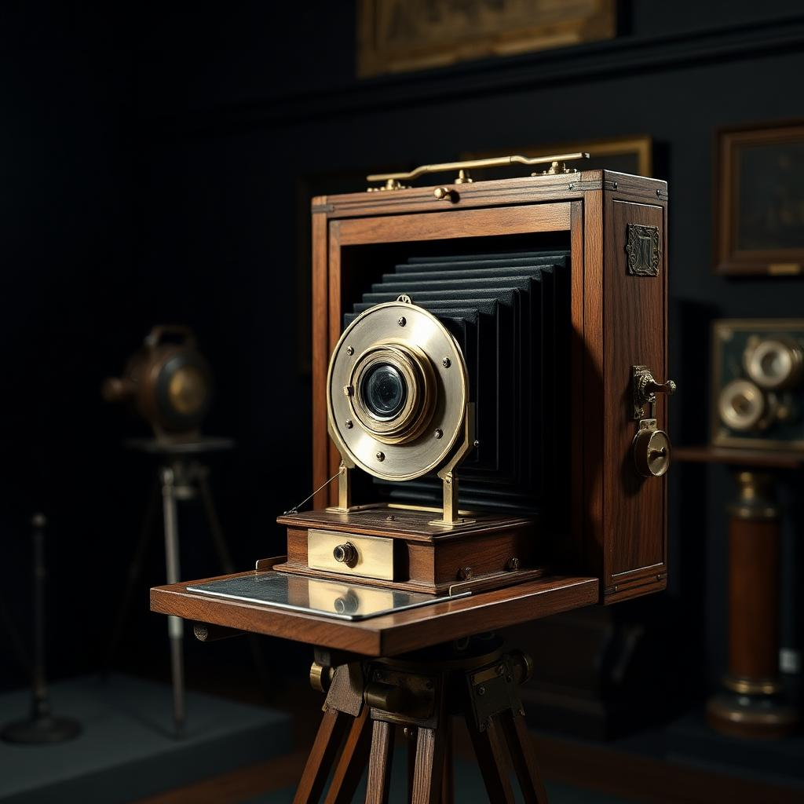

The Evolution
of Cameras
From the Camera Obscura to mirrorless marvels — explore how photography evolved over five centuries of light, chemistry, and innovation.


From the Camera Obscura to mirrorless marvels — explore how photography evolved over five centuries of light, chemistry, and innovation.
1 / 9